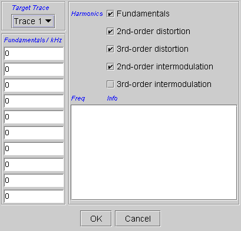
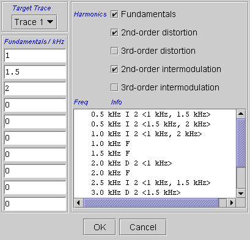
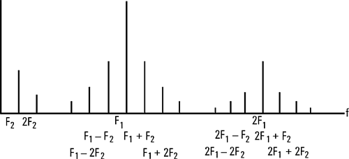

Harmonics...
The Harmonics menu item can be used to calculate the harmonic distortion and intermodulation frequencies from given fundamental frequencies. This function supports the easy distinction between harmonic and disharmonic distortions (random noise).
After selecting Harmonics, the Harmonics window shown in below appears.

Harmonics Parameters
You can enter the fundamental frequencies to be used for the calculation, and you can specify the amount of data to be calculated.
Harmonics: Five checkboxes to specify the kind of results to be calculated.
Fundamentals: Ten boxes where you can enter up to 10 frequencies that form the basis of the calculations.
Distortion analysis is based on FFT (Fast Fourier Transformation), which requires coherent conditions (Fin/Fs = M/N). Therefore, the real input frequency Fin can differ from the input frequency specified by the test method parameters.
Harmonics Results
The calculated harmonic frequencies are shown in the Freq(uency) column of the Harmonics window shown below.

The Info column shows the type and origin of the resulting harmonic frequencies. The harmonics for two fundamentals are calculated according to the following table.
Abbrev |
Meaning |
Formula for 2 Fundamentals |
|---|---|---|
F |
Fundamentals (generated signal frequencies) |
F1, F2 |
D2 |
2nd order distortion |
2 * F1, 2 * F2 |
D3 |
3rd order distortion |
3 * F1, 3 * F2 |
I2 |
2nd order intermodulation |
|F1 ± F2| |
I3 |
3rd order intermodulation |
|F1 ± 2 * F2|, |2 * F1 ± F2| |
If the fundamental frequency F2 is small compared to F1, you can expect a spectrum as shown below.

Many more harmonics will be calculated, if you specify more than 2 fundamentals (a multitone signal).
If the Analog Waveform panel view includes a spectrum (a display in frequency domain), the harmonics are shown in that display after clicking Done.
They are displayed as red vertical lines. The vertical position and height of these lines reflects the minimal and maximal value contained in the spectrum.